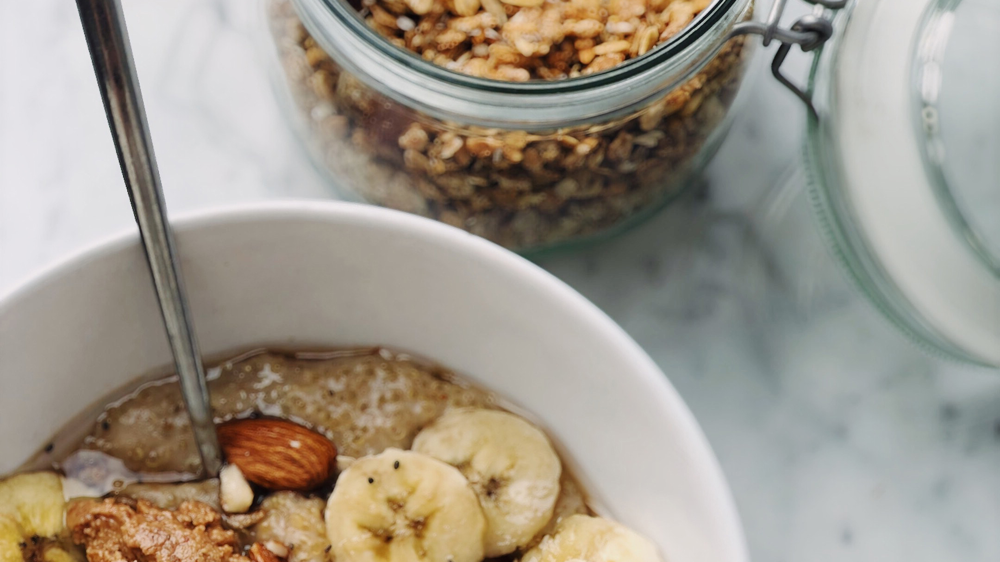
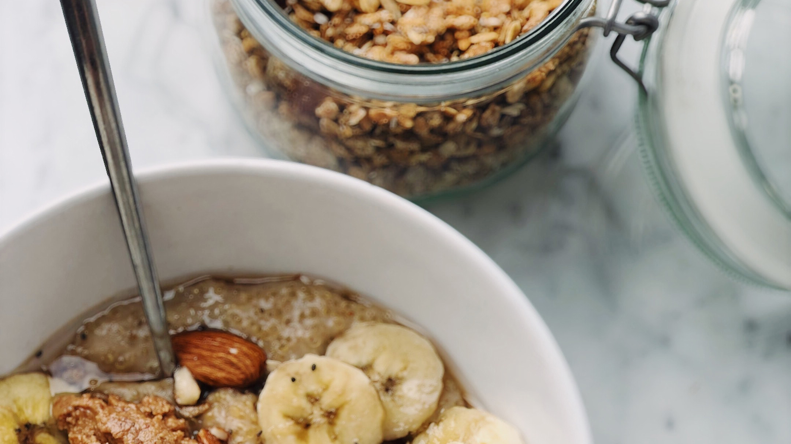

Nutrition facts and health benefits of buckwheat.
Buckwheat belongs to a group of foods commonly called pseudocereals...
Buckwheat can reduce weight and blood lipids.
蕎麥是一種營養豐富的全穀物，許多人認為它是一種超級食品。在其...
蕎麥是一種營養豐富的全穀物，許多人認為它是一種超級食品。在其健康益處中...
 
